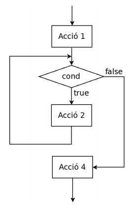

Estructura repetició i salt
Estructura iterativa
L’estructura de control iterativa permet reproduir un bloc d’instruccions un nombre de vegades determinat.
Mentre es compleixi una expressió booleana (una expressió lògica que s’avalua a veritat “true” o fals “false”) permet executar un bloc d’instruccions determinat.
Anomenarem bucle el bloc d’instruccions que es repeteixen i iteració a cadascuna de les vegades que es repeteix.
Característiques generals:
Tots els bucles tenen:
- Una precondició: Estat abans d’entrar al bucle
- Una postcondició: Estat al sortir de bucle
- Una expressió booleana: mentre es compleixi l’expressió booleana s’itera el bucle, un cop l’expressió booleana s’avalua a fals es “surt” del bucle i es continua amb l’execució de les instruccions següents.
- Variable de control: Ens serveix per controlar el nombre d’iteracions. Aquesta variable pot estar englobada en un dels següents grups:
- acumulador: guardem en una variable una operació concreta.
- comptador: augmentem o disminuïm una variable “comptant” iteracions.
- booleana: pot ser simplement una variable booleana que es manipuli dins el bucle.
Un bucle necessita:
1. Una condició de sortida: cal que l’expressió booleana s’avaluï a fals per sortir del bucle, sinó provocarem un bucle infinit.
2. La variable de control ens ha d’acostar pas a pas a complir amb la condició de sortida del bucle.
3. Dins el bucle a d’haver instruccions amb l’objectiu de buscar el resultat que dóna origen al bucle.
Existeixen diferents estructures iteratives.
- While
- For
- Do while
- Combinació d’estructures
- Instruccions de salt
1. While
L’estructura bàsica d’un bucle while en Java és:
while(expressió booleana){
Instruccions del bucle
}
Com ja s’ha explicat, mentre s’avaluï l’expressió booleana a cert s’executaran totes les instruccions contingudes en les claus {}. Quan es deixi de complir l’expressió booleana el fil d’execució sortirà del bucle i continuarà amb la següent instrucció que hi hagi després.
Consideracions:
- Si l’expressió no avalua a una expressió booleana donarà un error de compilació.
- Si no s’apliquen mecanismes que modifiquen el comportament de l’expressió booleana aconseguirem un bucle infinit.
| Codi | Diagrama de flux |
|---|---|
| Acció1; while ( cond ) { Acció2; } Acció4; |
 |
//Exemple. Objectiu: Imprimim de 1 a 10.
int i = 1; //Acció 1 (variable de control)
while(i <=10){ //cond
System.out.println(i); //Acció 2 (Resultat que estem buscant)
i++; //Acció 3 (Ens asseegurem que acaba el bucle ja que incrementem i)
}
2. For
El for és una estructura que permet realitzar recorreguts a un conjunt de dades de forma simple. Ens permet condensar la funcionalitat de bucle en una sola línia. Per exemple, si agafem l’exemple anterior, podem recorre els nombres del 1 al 10 de la següent manera:
for(int i=1; i <= 10; i++){
System.out.println(i);
}
Com s’observa, dins dels parèntesi “()” tenim tres instruccions separades per “;” :
- Inicialització d’una variable iteradora abans d’entrar al bucle (int i=1).
- Després tenim l’expressió booleana igual com posaríem en un bucle while (i<=10).
- Finalment tenim el pas que ens assegura que el bucle acaba (i++).
Així doncs
for (inicialització Iterador; Expressió booleana; Modificació Iterador)
Com s’ha observat amb els dos exemples anteriors: Qualsevol bucle while es pot transformar en un bucle for i viceversa.
3. Do while
Aquesta estructura no és tan utilitzada i és similar a l’estructura while. La diferència és que en el while abans de realitzar cap iteració es comprova l’expressió booleana, en canvi amb el do while primer es realitzar una iteracio i després es comprova l’expressió booleana. A efectes pràctics si estem segurs que existeix almenys una iteració es pot usar aquesta estructura.
El cas anterior fet en do while seria:
int i=1; //Inicialització variable
do
{
System.out.println(i); // Resultat
i++; //Modificació instrucció iteradora
}while( i <= 10 ); //Expressió booleana
| Codi | Diagrama de flux |
|---|---|
| Acció1; do { Acció2; } while ( cond ); Acció3; |
 |
4. Combinació d’estructures
Moltes vegades els nostres programes requereixen de més d’un bucle encadenat, per exemple quan resseguim una matriu de dades. Imagineu-vos un programa que escanegi un tauler d’escacs, no només ha de llegir files, sinó que també ha de llegir columnes, així doncs l’estructura seria la següent:
for(int i=1; i <= 8; i++){
for(int j=1; j <= 8; j++){
System.out.println("Posició " + i + " " + j);
}
}
En l’exemple anterior per cada posició ièssima es recorre el bucle 8 vegades per cada j. Així per cada fila recorrem totes les columnes. Si mirem l’execució del bucle obtenim:
Posició 1 1
Posició 1 2
Posició 1 3
Posició 1 4
Posició 1 5
Posició 1 6
Posició 1 7
Posició 1 8
Posició 2 1
Posició 2 2
Posició 2 3
Posició 2 4
Posició 2 5
Posició 2 6
Posició 2 7
Posició 2 8
Posició 3 1
Posició 3 2
Posició 3 3
...
Posició 8 8
En aquest cas estem parlant de dos bucles que són independents entre ells. Ja que per cada bucle interior no té afectació en l’exterior.
Però a vegades és necessari que els bucles siguin dependents, en aquest cas sí que hi hauria afectació. Modifiquem el programa anterior perquè, per exemple, enlloc de mostrar tot el tauler de posicions només vull mostrar aquelles que es troben per sobre de la diagonal:
for(int i=1; i <= 8; i++){
for(int j=1; j <= 8; j++){
if(i < j) {
System.out.println("Posició " + i + " " + j);
}
}
}
En aquest cas, si executeu veureu que només mostra la meitat superior de posicions. Això és així perquè en el bucle interior realitzem una operació que DEPÈN de la variable i que pertany al primer bucle, per tant el bucle interior depèn de l’exterior.
En el cas anterior, fixeu-vos que es realitzen 8 x 8 iteracions, sempre es realitzen totes 64 iteracions, quan el que volem és mostrar NOMÉS la meitat del tauler, una manera d’optimitzar el codi anterior seria la següent:
for(int i=1; i <= 8; i++){
for(int j=i; j <= 8; j++){
System.out.println("Posició " + i + " " + j);
}
}
D’aquesta manera, observeu que s’ha eliminat la condició, però ja només es realitzen aquelles iteracions necessàries (la meitat respecte el cas anterior) per obtenir el mateix resultat: mostrar les caselles superiors de la diagonal del tauler d’escacs.
5. Instruccions de Salt
break
La sentencia break té dos usos. El primer ús l’hem vist a l’apartat anterior quan serveix per acabar un case del switch. El segon ús és forçar l’acabament immediat d’un cicle, saltantla prova condicional normal del bucle o la sentència de selecció.
Per exemple quan s’arribi a 10 es vol que es surti del bucle
for(int i=1; i <= 20; i++){
if(i == 10){
break;
}
System.out.println("Posició " + i + " " + j);
}
continue
En aquest cas, la sentencia continue, a diferència del break, el que fa és saltar la iteració actual però continua iterant dins el bucle sense tenir en compte la iteració on s’executa el continue;.
Volem imprimir tots els nombres del 1 al 20, a excepció del 10.
for(int i=1; i <= 20; i++){
if(i == 10){
continue;
}
System.out.println(i);
}
Exemples
- Fer un programa que llegeixi dos nombre enters n1 i n2 amb n1 < n2 i escrigui tots els nombres enters dins l’interval [n1, n2] en ordre creixent. Aquest és un exemple de recorregut on la variable n1 fa de comptador.
var n1 = sc.nextInt();
var n2 = sc.nextInt();
while(n1 <= n2) {
System.out.println(n1);
n1++;
}
- Fer un programa que llegeixi dos nombre enters n1 i n2 amb n1 < n2 i escrigui els nombres enters parells que hi ha dins l’interval [n1, n2] en ordre creixent. El nombre zero es considera parell.
int n1 = sc.nextInt();
int n2 = sc.nextInt();
for(int i=n1; i <= n2; i++) {
if(i%2 == 0) System.out.println(i);
}
//2naOpcio (meitat d'iteracions)
if(n1%2 != 0)n1++;
while(n1<=n2) {
System.out.println(n1);
n1 = n1+2;
}
- Fer un programa que llegeixi el valor de la base, un nombre enter i l’exponent, un nombre enter no negatiu, i escrigui el valor de la potència a b . No emprar la funció Math.pow(). En aquest cas resultat fa d' acumulador d’un resultat que es mostra al final.
int base = sc.nextInt();
int exponent = sc.nextInt();
int i = 0;
int resultat = 1;
while(i < exponent) {
resultat = resultat * base;
i++;
}
System.out.println(resultat);
- Fer un programa que llegeixi un nombre enter i escrigui si és un nombre primer o no. Un nombre enter és primer si es més gran que 1 i només és divisible per 1 i per ell mateix.
/*
Fixeu-vos amb l'expressió booleana del bucle, en aquest cas es fa ús d'una variable booleana per sortir del bucle i no continuar iterant, en cas que ja haguem descobert la solució i no sigui necessari continuar iterant.
*/
System.out.println("Llegeix nombre: ");
int n = sc.nextInt();
//inicialitzo variables,index=n/2 i analitzem tots els possibles divisors de n/2 fins a 1.
boolean esPrimer = true;
int index = n/2;
//En la condició del bucle,si trobem un divisor ja no cal que continuem buscant i acabem
while(index > 1 && esPrimer){
if(n % index == 0) esPrimer = false;
index--;
}
//Escrivim solucio
String sol = (!esPrimer)? "NO és primer" : "És primer" ;
System.out.println(sol);
Una altra manera de realitzar el cas anterior utilitzant el break seria la següent:
System.out.println("Llegeix nombre: ");
var n = sc.nextInt();
var index = n/2;
while(index > 1){
if(n % index == 0) {
break;
}
index--;
}
//Escrivim solucio
System.out.println((index == 1)? "És primer" : "NO és primer");
- Fer un programa que llegeixi un nombre enter i escrigui si és capicua o no.Considerarem també capicues els nombres enters d’una xifra.
System.out.println("Llegeix nombre: ");
var n = sc.nextInt();
var valorInicial = n;
var capicua = 0;
while(n>0){
capicua = capicua*10;
capicua = capicua + n%10;
System.out.println(capicua);
n = n/10;
}
System.out.println(capicua);
if(valorInicial == capicua) System.out.println(n+ "és un nombre capicua");